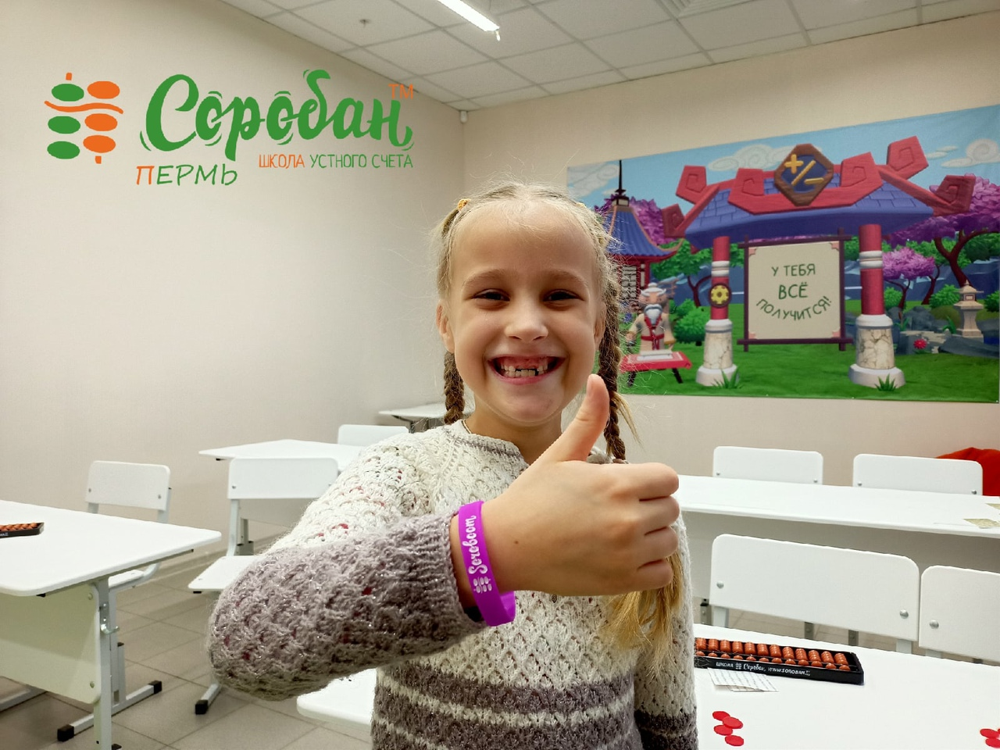
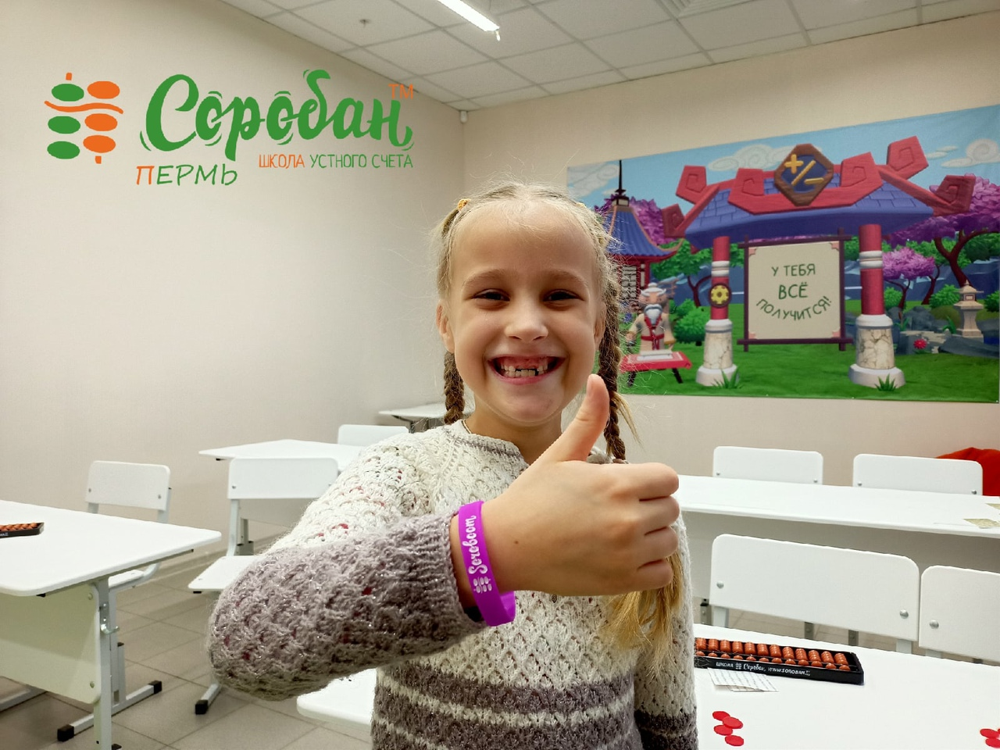
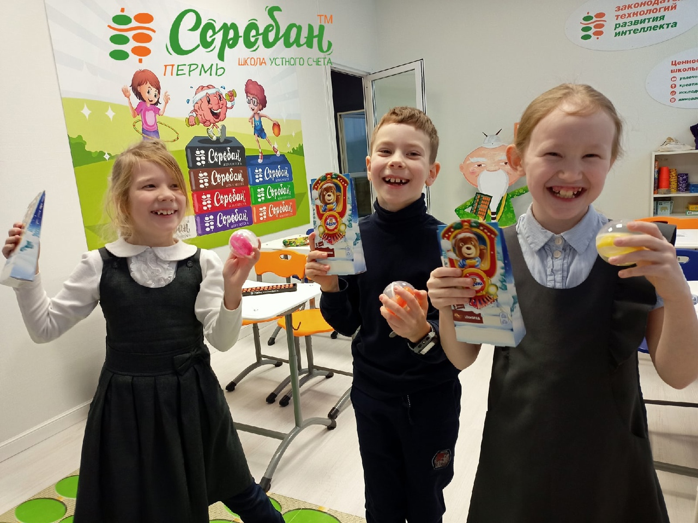
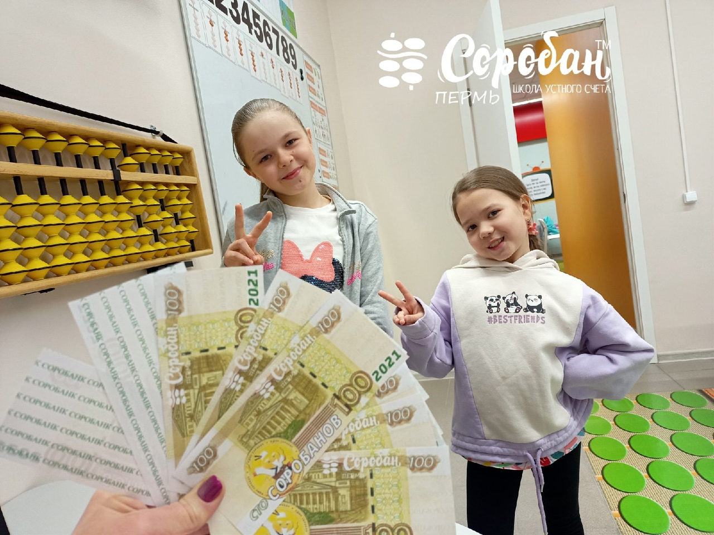
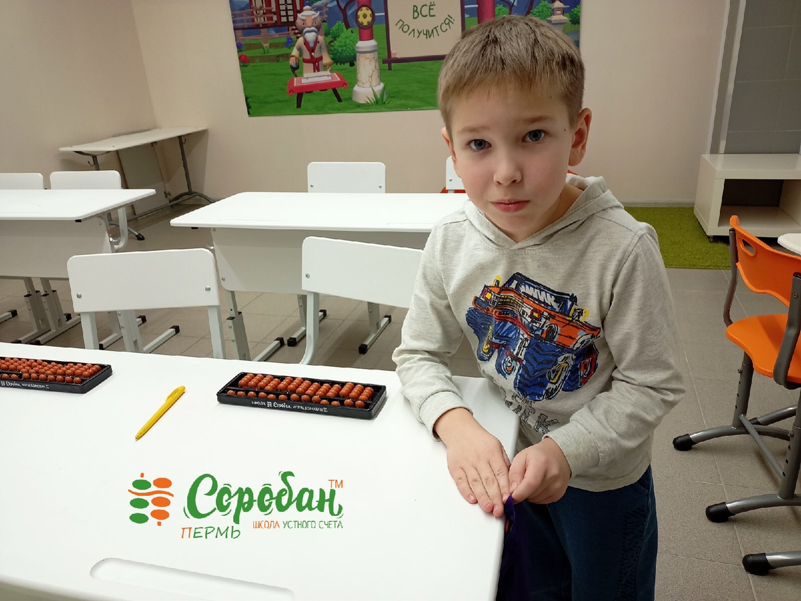
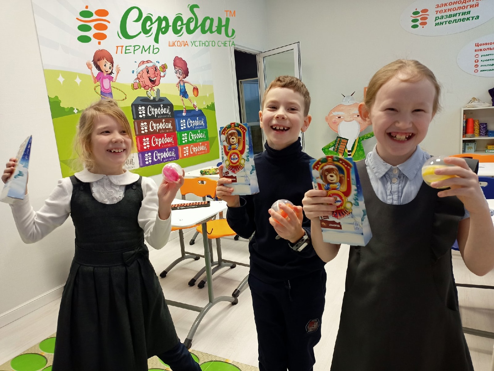
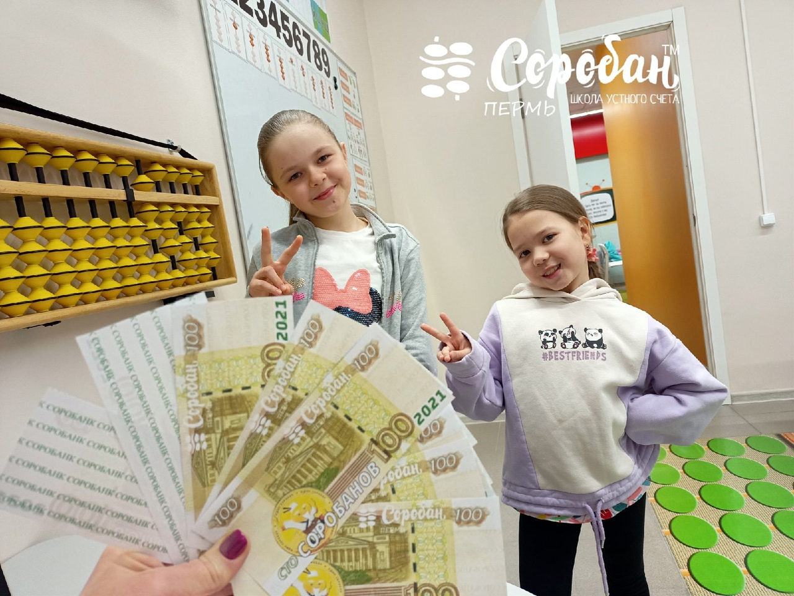
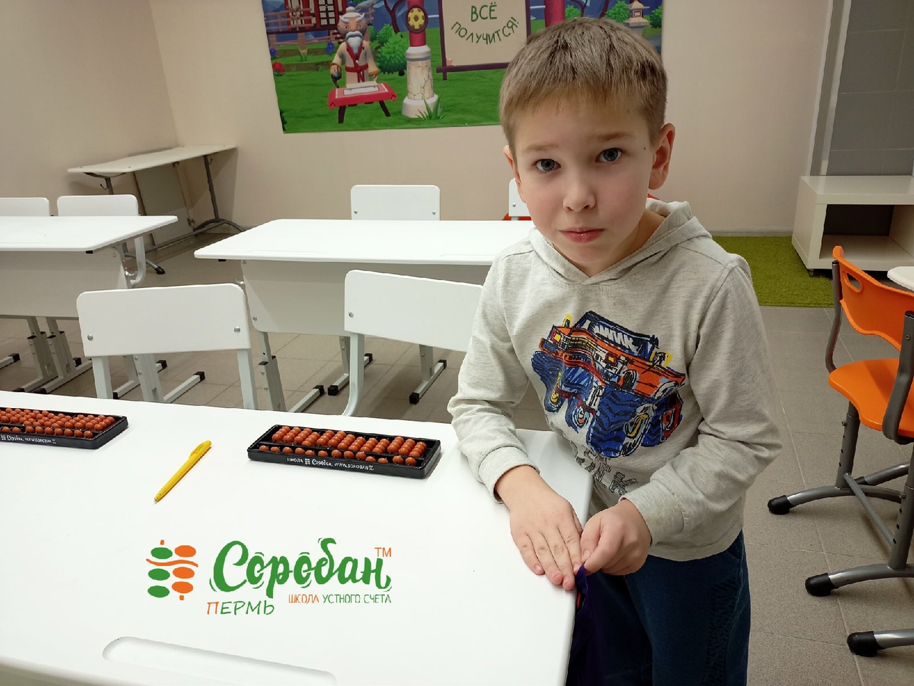

Детский учебный центр PROзнание


Proстранство дающие знание
Центр, объединяющий лучшие методики развития


 

 





Подходит всем детям с разными способностями
Помогает ребенку с малых лет изучит IT
У детей развивается мелкая моторика рук
Помогает в развитии мышления
Развивает усидчивость и логику
Развивает творческого мышления
Воспитывает усидчивость и концентрацию
Развивает внимание и способстве развию других качеств
Представлений об окружающем мире